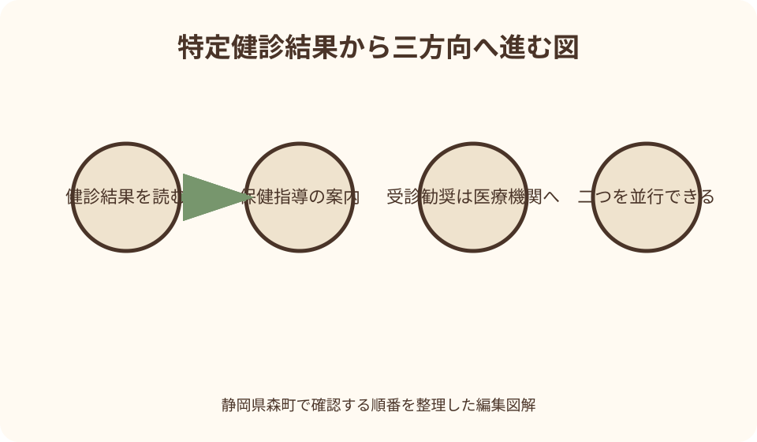
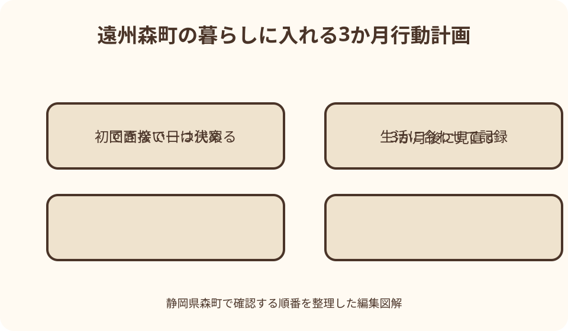

健康・医療・保険｜最終確認 2026-08-10
静岡県森町の特定保健指導｜案内が届いた後の参加方法と3か月の行動計画
特定保健指導の案内は、健診で病名が確定した通知でも、生活態度を責める手紙でもありません。健診結果と質問票を基に保険者が対象者を選び、医師、保健師、管理栄養士などと本人が実行可能な行動計画を作る機会です。静岡県森町では、森町国保の特定健診結果から対象となった人へ案内します。通知を放置せず、まず受診勧奨の有無と参加方法を読み分けましょう。

編集イラスト最初に結論：案内を基準に参加手続きを確認する
特定保健指導は、希望者が自由に申し込む一般的な健康相談とは仕組みが異なります。特定健診の結果と質問票を用いて保険者が対象者を選び、該当する人へ利用案内を送るのが基本です。
森町国民健康保険の加入者で案内を受け取った人は、封筒に記載された申込先、期限、実施場所、連絡方法を最初に確認します。ウェブ上の一般論より、本人宛ての当年度案内を優先してください。
案内が届いたことは、重い病気が確定したという意味ではありません。一方で、健診結果に医療機関への受診を勧める表示があるなら、特定保健指導への参加だけで受診を置き換えないことが重要です。
参加を迷うときも、通知を捨てる前に森町の担当へ相談します。仕事、介護、通院、移動の事情を伝え、日時や実施方法に選択肢があるかを確認すると、現実的な参加方法を探せます。
特定健診と特定保健指導の違い
特定健診は、40歳から74歳までの医療保険加入者を対象に、メタボリックシンドロームに着目して健康状態を確かめる健診です。森町国保では、加入している保険者である森町が実施主体になります。
特定保健指導は、その健診結果から生活習慣を見直す支援が必要と選定された人に行うものです。採血や計測をする健診と、結果を読み行動計画を作る保健指導は別の段階です。
健診受診者全員には、結果に応じた情報提供があります。そのうち基準に該当した人が動機付け支援または積極的支援の対象となるため、同じ健診を受けた家族に案内がなくても不自然ではありません。
75歳以上の人は後期高齢者医療の健康診査へ移り、森町国保の特定健診・特定保健指導とは入口が変わります。年齢だけでなく、健診日現在の加入保険を確かめる必要があります。
森町国保で対象となる人
森町公式ページは、特定健診を40歳から74歳までの森町国保加入者向けと説明しています。年度途中に40歳になる人など案内上の年齢表現が異なる場合があるため、届いた受診券の対象期間を確認します。
特定保健指導の対象は、単に体重が多い人全員ではありません。腹囲またはBMIを入口に、血糖、脂質、血圧、喫煙歴などを組み合わせて保険者が階層化します。
数値が気になっても、インターネット上の早見表だけで自分が対象かを確定しないでください。検査値、質問票、服薬状況、年齢によって扱いが変わり、最終的な案内は保険者が行います。
対象にならなかった人にも健診結果の確認は必要です。基準範囲外の項目や受診勧奨があれば、特定保健指導の通知を待たず、結果票に示された相談先へつなげます。
対象判定は腹囲だけでは決まらない
対象者の選定では、内臓脂肪の蓄積に着目し、腹囲やBMIと複数の検査結果を組み合わせます。腹囲だけを見て、案内が来る・来ないを予測する方法ではありません。
血糖、脂質、血圧の各リスクに加え、一定の条件では質問票の喫煙歴も判定に関係します。検査票の一項目がわずかに基準を超えただけで、必ず積極的支援になるわけでもありません。
65歳から74歳までの扱いや、治療薬を使用している人の除外など、判定には年齢と医療の状況も関係します。本人が数式を再現するより、通知の区分を確認する方が確実です。
案内が届かない理由を知りたい場合は、健診結果票と加入状況を手元に置いて森町国保へ尋ねます。医療情報を電子メールへ不用意に書かず、町が指定する安全な相談方法を使います。
動機付け支援で行うこと
動機付け支援では、医師、保健師または管理栄養士による面接を受け、自分の健康状態と生活習慣のつながりを振り返ります。専門職が一方的に目標を決める場ではありません。
初回面接では、本人が続けられる行動計画を作ります。厚生労働省の基準は、本人が健康状態を自覚し、自主的な取組へ移れるよう支えることを目的にしています。
計画を作った日から3か月以上が経過した後、行動の実績を評価します。体重など一つの結果だけではなく、計画をどの程度実行できたか、続け方をどう調整するかも振り返ります。
面接回数や連絡手段は、実施機関と本人の案内によって異なります。対面、電話、オンラインなどを利用できるかは、通知に書かれた実施先へ事前に確認してください。
積極的支援で行うこと
積極的支援も、初回面接で本人が行動計画を作るところから始まります。動機付け支援との主な違いは、その後3か月以上にわたり継続的な支援が組み込まれる点です。
継続支援では、食事、身体活動、喫煙、休養などから本人の課題に合う項目を選び、実行状況を確認します。すべてを同時に変えることを求めるものではありません。
第4期の特定健診・特定保健指導では、積極的支援の評価に、体重・腹囲や生活習慣の変化といった成果を見る考え方が加わっています。ただし、特定の数値達成を個人に保証する仕組みではありません。
途中で計画が守れなかった場合も、支援を受ける意味がなくなるわけではありません。理由を隠さず専門職へ伝え、勤務日、天候、体調に合わせて行動の量や時間帯を組み替えます。
医療機関への受診勧奨と分けて考える
健診結果に『要受診』『要精密検査』などの表示がある場合は、医師の診察につなぐ必要があります。特定保健指導は、病気を診断したり、治療の要否を決めたりする場ではありません。
保健指導の案内と受診勧奨が同時に届くことも考えられます。その場合は、どちらか一方を選ぶのではなく、受診の優先度と保健指導の参加日程をそれぞれ確認します。
胸痛、息苦しさ、意識の変化など急な異変があるときは、通常の保健指導予約を待ちません。緊急性はウェブ記事で判断できないため、救急要請や医療機関への連絡を優先します。
受診先へは健診結果票を持参し、特定保健指導の案内も受け取ったと伝えます。かかりつけ医の指示と行動計画が食い違わないよう、必要に応じて実施機関へ情報を共有します。

服薬中・通院中の場合
血圧、血糖、脂質に関係する薬を使用している人は、特定保健指導の対象選定から除外される場合があります。服薬の有無を自己判断で省略せず、健診質問票へ正確に記入します。
健診後に薬を飲み始めた、頓服だけ使っている、薬の名称が分からないなど、案内時点と状況が変わった場合は実施先へ伝えます。お薬手帳があると確認しやすくなります。
対象から外れる可能性があっても、医師の指示なく薬を中断してはいけません。保健指導を受けるために服薬を隠すことも、治療を優先するため生活相談は不要と決めることも避けます。
通院中の食事・運動については、疾患や薬の内容によって注意点が異なります。一般的な減量例をそのまま試さず、主治医と保健指導の専門職が確認できる形で目標を作ります。
案内が届いたら準備するもの
最初に、特定保健指導の案内、特定健診結果票、質問票の控えを一つの封筒へまとめます。申込期限、電話番号、予約候補日には付箋を付け、家族が代わりに予約できるかも確認します。
次に、お薬手帳、通院先、勤務時間、普段の食事時間、移動方法を簡潔に書きます。完璧な食事記録より、典型的な平日と休日の違いが分かるメモの方が計画作りに役立ちます。
体重計や歩数計の購入を急ぐ必要はありません。自宅にある機器、スマートフォンの記録、通勤や農作業の時間など、無理なく把握できる材料から始めます。
予約先へは、持ち物、所要時間、本人負担の有無、駐車場、変更・欠席の連絡方法を尋ねます。森町の特定健診自己負担額1,500円を、保健指導の費用と混同しないでください。
初回面接で伝える生活の実際
初回面接では、理想的に見える回答より、続けにくい理由を具体的に伝えることが大切です。夜勤、介護、長時間運転、家族と別の食事などは、目標の作り方へ直接関係します。
森町北部から通勤する人は、移動時間や冬季の暗さによって屋外活動が難しい日があります。『毎日歩く』ではなく、場所と時間を含めた代替案を専門職と考えます。
農作業や立ち仕事をしていても、活動量の種類と身体への負担は人によって違います。よく動いているという感覚だけで運動を追加せず、痛みや持病を含めて相談します。
食事では、朝食を抜く日、外食、総菜、飲酒、間食の頻度を責められると恐れず伝えます。変えられる一場面を見つけるための情報であり、生活全体を採点する面接ではありません。
続けられる行動目標の作り方
行動目標は『健康的に暮らす』のような抽象語だけで終えず、いつ、どこで、何を、どの程度行うかを決めます。実施したか本人が判断できる表現にすると記録が続きます。
たとえば『夕食後に毎日30分歩く』が難しければ、『雨でない平日のうち週3日、夕食前に自宅周辺を10分歩く』まで小さくします。体調や道路状況への代案も用意します。
食事目標は、食品を一律に禁止するより、量、回数、置き換える場面を決めます。治療中の食事制限がある人は、主治医や管理栄養士の指示を優先します。
体重や腹囲の目標と、本人が直接行える行動は分けて書きます。数値が予定どおり変わらなくても、行動記録を基に原因と次の一歩を専門職と見直せます。
3か月の支援期間を暮らしへ入れる
支援は一度の面接で忘れてしまわないよう、初回日、途中確認、3か月以上後の評価日をカレンダーへ入れます。積極的支援では、指定された継続連絡の日も加えます。
記録項目を増やしすぎると負担になります。歩いた日、夕食の時刻、飲酒日など、行動目標に直結する一つか二つを選び、丸印だけでも残します。
冠婚葬祭、繁忙期、農繁期、家族の入院などで中断したら、中断日と理由を一行書きます。空白を失敗と扱わず、再開しやすい最小単位を相談します。
評価日は合格・不合格を宣告する日ではありません。体重や腹囲、生活習慣の変化、計画の実行状況を確認し、その後も自分で続ける方法へつなぐ日です。
勤務先健診・人間ドックを受けた人
森町国保加入者が勤務先健診や人間ドックを受け、町の特定健診を受けない場合でも、その結果が特定健診の検査項目を満たすことがあります。森町は結果提供への協力を案内しています。
提出時には、健診結果の写しと町が求める質問票などを用意します。どの項目が必要か、原本を預けるかは、国保年金係または案内に記載された担当へ確認してください。
結果を提出すると、町が受診状況を把握し、結果に応じた支援へつなげられる場合があります。提出しただけで必ず特定保健指導の対象になるとは限りません。
勤務先の健康相談と森町国保の支援が重なる場合は、両方へ参加状況を伝えます。異なる目標を同時に課して混乱しないよう、一つの生活計画として整合を取ります。

転職・転居・保険変更がある場合
特定健診を受けた後に就職して社会保険へ入った、森町外へ転出した、扶養へ入った場合は、案内を出した保険者と現在の保険者が異なることがあります。
保険変更が分かったら、案内を送った森町の担当へ、資格喪失日と現在の加入先を伝えます。参加を続けられるか、新しい保険者へ相談するかを確認してください。
転居しても健診結果票は本人の健康記録として保管します。新しい保険者やかかりつけ医へ見せるときは、受診日と特定保健指導の実施状況も添えます。
家族の保険証や資格確認書だけを見て推測せず、本人の加入履歴を基準にします。資格情報の取扱いと保健指導の引継ぎは別の手続になる場合があります。
家族が支えるときの距離感
家族は予約や移動を助けられますが、食事や体重を監視する役になる必要はありません。本人が選んだ目標と、家族に頼みたい支援を分けて確認します。
家族全員の献立を大きく変える前に、本人の計画で必要な変更を聞きます。持病、年齢、体格が異なる家族へ同じ食事制限や運動量を当てはめないでください。
本人の健診結果には慎重に扱う情報が含まれます。面接への同席や結果共有は本人の同意を得て、写真を家族グループへ送る場合も送信先を確かめます。
計画どおりでない日を責めるより、通院、買物、散歩など既存の予定へ小さな行動を結び付けます。本人が自分で選べる余地を残す方が継続しやすくなります。
森町で参加する良い点
良い点は、健診結果を受け取るだけで終わらず、専門職と生活へ落とし込む時間を持てることです。数値の意味を本人の一日に結び付ける入口になります。
森町の実施計画では、保健福祉センター内または委託契約を結んだ医療機関等で特定保健指導を行うとしています。年度の案内で実際の会場を確かめれば、通いやすさを比較できます。
同計画には、一部の実施機関で健診当日に初回面接を行う取組も記載されています。結果説明と支援開始が近いことで、別日に出向く負担を抑えられる可能性があります。
行動目標を小さく設定し、3か月後に振り返る仕組みは、自己流で急な食事制限を始めるより安全に相談しやすい点があります。体調や治療との調整も専門職へ持ち込めます。
森町の案内に注文したい点
注文したい点は、森町公式の特定健診ページには保健指導を実施する旨がある一方、初めて案内を受けた人向けに、申込みから評価までを一ページで示す説明が少ないことです。
動機付け支援と積極的支援の違い、標準的な所要期間、実施場所の選び方が当年度のウェブ案内で見えると、通知を開いた段階で予定を立てやすくなります。
服薬開始、転職、転居、受診勧奨が重なった場合の連絡先も、よくある質問として示してほしいところです。対象外になった理由が分からない人への説明導線も必要です。
山間部からの移動や平日日中に参加しにくい人のため、オンライン対応、休日・夜間枠、日程変更の可否を実施機関別に比較できる表示があると参加の中断を減らせます。
指定日時に参加できない場合の代案・結論
指定日時に参加できない場合は、無断で欠席せず、案内の連絡先へ早めに相談します。別日、別会場、遠隔面接などの可否は年度や実施機関によって異なります。
通院中で医師の指導を受けている場合は、その事実を保健指導の担当へ伝えます。特定保健指導を一律に断るのではなく、対象区分と主治医との連携方法を確かめます。
案内を紛失した場合は、健診日、氏名、生年月日、森町国保の加入状況を準備し、町の国保年金係へ再案内の可否を尋ねます。個人情報を第三者へ預けないようにします。
結論は、通知の区分を読み、受診勧奨を先に切り分け、初回面接で一つか二つの行動を決めることです。3か月後の評価までを予定に入れれば、案内を生活の変更へつなげられます。
大石の視点：数字より続く一手を選ぶ
大石の視点では、健診結果の赤い印を見て、いきなり厳しい目標を立てる必要はありません。森町での通勤、家業、介護を含む一日から、繰り返せる一手を探すことが先です。
山間部で『毎日買物へ歩く』ことと、町なかで同じ目標を立てることは条件が違います。道路、照明、天候、車移動を踏まえ、同じ効果を狙える室内の代案も持ちます。
三日できなかった記録にも価値があります。できなかった曜日や理由が分かれば、夕食後から朝へ移す、週五日から週二日へ減らすなど、実行可能な形へ直せます。
保健指導は家族や専門職に生活を預ける場ではなく、自分で選び直せる道具を増やす場だと考えます。小さな変更を記録し、次の健診で比較できれば、単年の数値だけに振り回されません。
二つの固有図解で流れを確認する
一つ目の図解は、健診結果から『記録を続ける』『特定保健指導へ参加する』『医療機関へ相談する』の三方向を示します。受診勧奨と保健指導を同じ箱へ入れないことが目的です。
二つ目は、森町での3か月を一周の道として描きます。初回面接、平日の小さな行動、雨天時の代案、途中連絡、3か月後の評価を、町なかと山間部の生活場面へ配置します。
図中の数値は目標例であり、全員へ同じ体重減少や歩数を求めるものではありません。本人の結果、持病、生活時間に応じて専門職と決める余白を明示します。
図解を印刷する場合は、裏面に予約日、連絡先、本人の行動目標を手書きします。医療情報を公共の掲示場所へ置かず、自宅で保管する実用カードとして使います。
一次情報の読み分けと相談先
森町公式の特定健診ページは、対象年齢、森町国保が実施すること、結果に応じて特定保健指導を行うことを確かめる入口です。個人の予約方法は届いた案内で確認します。
森町の第3期データヘルス計画・第4期特定健康診査等実施計画は、町の実施場所や取組の考え方を確認する資料です。計画値を個人の診断基準として使わないでください。
厚生労働省の省令と実施方法は、動機付け支援、積極的支援、専門職、3か月以上後の評価という全国共通の枠組みを示します。森町の日程や予約先は町の案内が優先です。
静岡県のページは制度の概要を確認する補助資料です。個別の検査値、服薬、受診勧奨は医師へ、案内の再発行や参加区分は森町国保へと、質問を分けると回答が明確になります。
まとめ：初回面接から評価日までを一続きにする
案内が届いたら、特定健診結果票、通知、服薬情報をそろえます。受診勧奨の記載があれば医療機関への連絡を優先し、特定保健指導の申込みとは別に進めます。
初回面接では、動機付け支援か積極的支援かを確認し、本人の生活で実行できる一つか二つの行動目標を作ります。大きな目標より、記録できる具体性を重視します。
積極的支援では継続連絡へ応じ、どちらの区分でも計画作成から3か月以上後の評価まで予定へ入れます。中断したときは理由を共有し、再開の単位を小さくします。
本稿は2026年8月10日時点の一次情報を基にしており、個別の診断や治療を示すものではありません。最新の参加条件は本人宛て通知と森町公式案内で確認してください。
公式情報・確認先
掲載内容は次の一次情報を基礎に整理しました。営業、料金、催し、交通は変わるため、出発前または手続き前にリンク先で最新情報を確認してください。
- 国民健康保険特定健診について（静岡県森町、2026-08-10確認）
- 大人の健康・検診・相談・健康づくり（静岡県森町、2026-08-10確認）
- 森町国民健康保険 第3期データヘルス計画及び第4期特定健康診査等実施計画（静岡県森町、2026-08-10確認）
- 特定健康診査・特定保健指導（静岡県、2026-08-10確認）
- 特定健診・特定保健指導について（厚生労働省、2026-08-10確認）
- 特定健康診査及び特定保健指導の実施に関する基準（厚生労働省、2026-08-10確認）
- 厚生労働大臣が定める特定保健指導の実施方法（厚生労働省、2026-08-10確認）